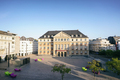
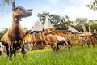
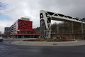
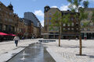
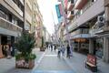
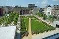
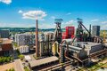

Multimédia
Nesta página encontra conteúdos multimédia.
Fotografias | Vídeo | Poema
Fotografias








Vídeo
Poesia
Nas margens calmas do rio Alzette,
Ergue-se a história da cidade de ferro,
Onde o trabalho o futuro projeta,
E a tradição abraça o novo tempo.